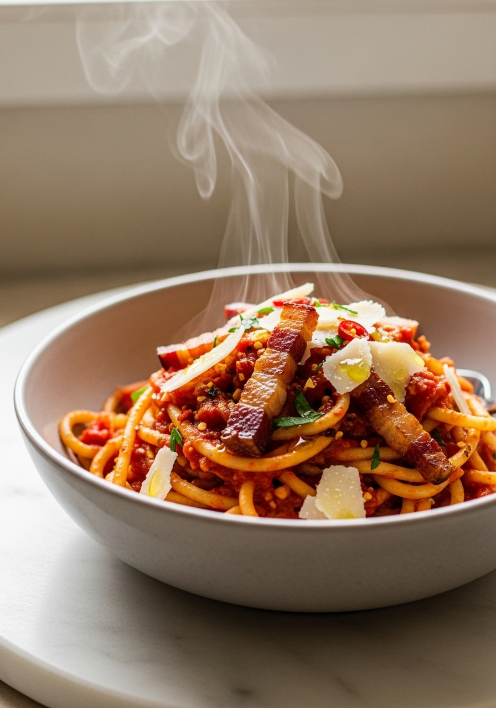
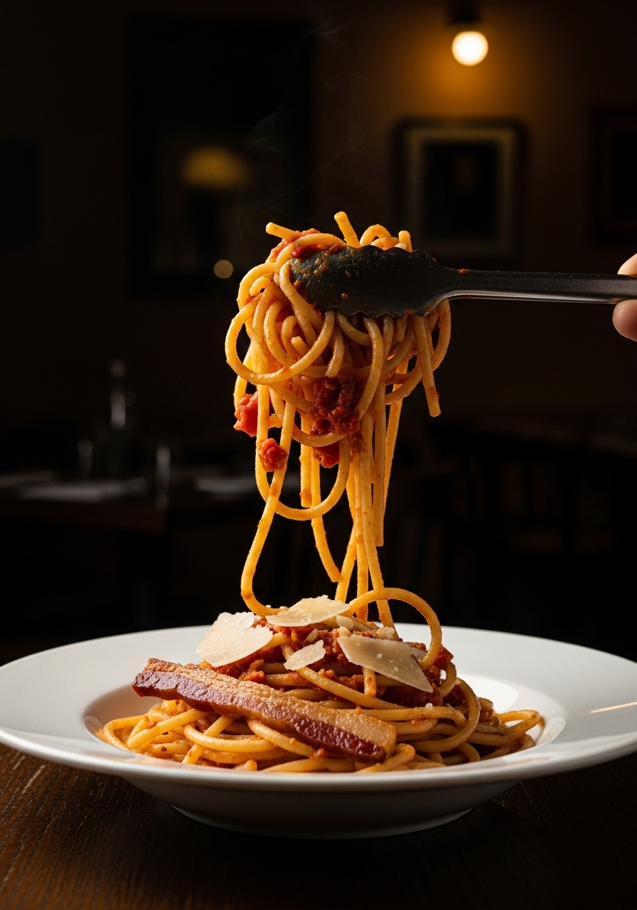

La pasta all'Amatriciana è uno dei quattro piatti di pasta canonici di Roma — e uno dei più fraintesi. Niente cipolla. Niente aglio. Niente olio d'oliva. Solo guanciale reso nel proprio grasso, vino bianco secco, pomodori San Marzano e Pecorino Romano. Questa è la ricetta ufficiale registrata dal Comune di Amatrice.

25 MinIl paese di Amatrice, tra i monti del Lazio, ha registrato la propria ricetta ufficiale dell'amatriciana nel 2015. Gli ingredienti sono non negoziabili: guanciale (non pancetta, non bacon), pomodori San Marzano, Pecorino Romano, vino bianco e peperoncino. Niente olio d'oliva — il grasso del guanciale è il mezzo di cottura. Niente cipolla, niente aglio — aggiunte che compaiono in innumerevoli ricette di 'amatriciana' online ma che non hanno posto nel piatto autentico.
Sì. Il guanciale (guancia di maiale stagionata) ha un contenuto di grasso significativamente più elevato e un sapore di maiale più intenso e leggermente dolce rispetto alla pancetta (pancia di maiale stagionata). Quando viene reso, il grasso del guanciale ha una qualità più setosa e aromatica che cambia fondamentalmente il carattere del piatto. Ad Amatrice, usare la pancetta è considerata una sostituzione inaccettabile. Fuori dall'Italia, il guanciale si trova in gastronomie italiane e negozi specializzati — vale la pena cercarlo.
Ingredienti
Procedimento

La salsa amatriciana si conserva in frigo per 3 giorni e si congela bene per 3 mesi. Riscalda con un goccio d'acqua. Cuoci la pasta fresca ogni volta — la pasta cotta nella salsa troppo a lungo diventa molle. Mescola la salsa riscaldata con pasta appena cotta e aggiungi il Pecorino alla fine.
La ricetta originale di Amatrice esclude esplicitamente la cipolla. La ricetta ufficiale del Comune elenca esattamente 7 ingredienti senza variazioni. Aggiungere la cipolla è un compromesso romano diventato comune nelle trattorie, ma non è amatriciana autentica — è una versione semplificata.
Un vino bianco secco — Verdicchio, Pinot Grigio, o qualsiasi bianco secco neutro. Il vino serve per sfumare e aggiungere acidità, non sapore. Deve evaporare completamente prima di aggiungere i pomodori.
Puoi usare la pancetta all'occorrenza. Non usare il bacon affumicato — l'affumicato stride con il piatto. Vale la pena trovare il guanciale autentico in una buona gastronomia italiana.
Il bucatino è tradizionale — uno spaghetto spesso e cavo che trattiene la salsa all'interno. Il rigatone è la seconda scelta. Gli spaghetti funzionano ma sono meno autentici. Non usare mai pasta corta come le penne.
Tradizionalmente sì — un peperoncino secco dà al piatto un calore di fondo presente ma non preponderante. Se vuoi più piccante, aggiungi un pizzico di peperoncino in scaglie. Se non vuoi niente di piccante, ometti il peperoncino del tutto.